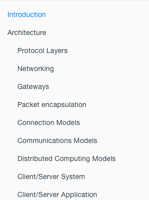
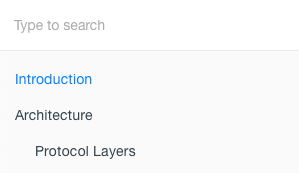
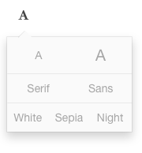
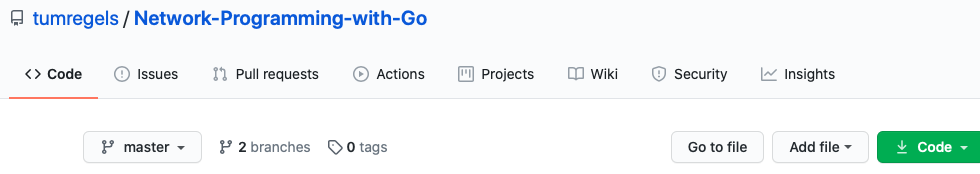

目标网站功能
这个网站是一个使用gitbook发布的图书，包含多个章节及其内容
左侧是图书的导航栏，可以认为是书本的目录，点击对应的链接即可进入对应章节
左侧导航栏上方是搜索框，可以搜索书的内容
导航栏可以被收起
点击EDIT会跳转到书本GitHub的Fork界面
此外，书本的页面字体、字体大小以及主题颜色也可以选择
点击右上角的GitHub图标会跳转到书本的GitHub主页
在任何界面，点击上方灰色的章节名称，都会回到introduction页面
浏览文章时可以通过
<和>图标，跳到上一或者是下一页